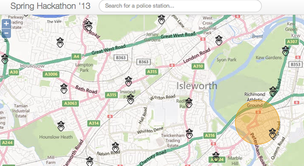

26-28 de Abril en Londres, 3 hackathones en apenas 300 metros de distancia y muchas ganas de programar. En el pasado mes de octubre había estado en la #angelhack me quedo con un poco mal sabor de boca debido a que no cumplió mis expectativas a nivel de proyectos.
Este fin de semana, con la compañía de @agonzalezroro, nos fuimos a la hackatoncentral, que tenía una bases muy interesantes:
- Varios proveedores de APIS que patrocinaban el evento. Siendo los más accesibles OpenStreetMaps, twilio o el api de la policía de Reino unido
- Enfocado a aplicaciones locales, ya sean web o móvill.
- Tenía que ser freshcode
- Había 6 diferentes categorías para optar a interesantes premios.
La idea era hacer un chat Webrtc/sip con Kamailio con localización en un mapa, pero finalmente, al presentar las API de los patrocinadores, la habían propuesto, por lo que la desechamos y empezamos a pensar en otra solución/idea.
La idea fue un sistema de localización de comisarías de policía en un mapa, y que al clickar en ella se pudiera llamar gratuitamente a la comisaría.
Empezamos a programar y teníamos claro que usaríamos herramientas que no usábamos a menudo para así aprender algo nuevo,aqui os presento la lista:
- Backend: Finalmente usamos Flask, que es muy ligero y rápido de programar.
- Frontend: Finalmente nos decantamos por emberjs. Álex prefería backbone, pero yo había estudiado las últimas semanas este framework. Por otra parte también usamos Openlayers con los layers de bing para mostrar el mapa.
- Se hicieron una pequeños scrappers para detectar la situaciones de las comisarías de policía, algo liosa la API para usar, por lo que se hizo un pequeño script que lo pasaba a un fichero json.
- Para el deploy usamos Heroku que nunca lo había usado, pese a leer sobre el a menudo. Muy grata satisfacción con la sencillez de hacer los deploys :-).
- Para realizar las llamadas usamos Twilio, que simplemente realizaba un click to call de vieja usanza.
Al final el resultado: para ser un par de días, y no haber pasado mucho tiempo por la noche creo que ha sido bastante aceptable, como no el codigo esta en github y se puede ver la aplicación online
Me alegra haber asistido a esta hackaton. Alex me ha enseñado muchos tips que me van a servir mucho durante mis jornadas laborales. Además por fin he probado esas tecnologías que siempre lees, pero que siempre tienes la duda de usarlas o no.
Nos vemos en la próxima hackathon, que espero que sea pronto. :-)
Commentarios: